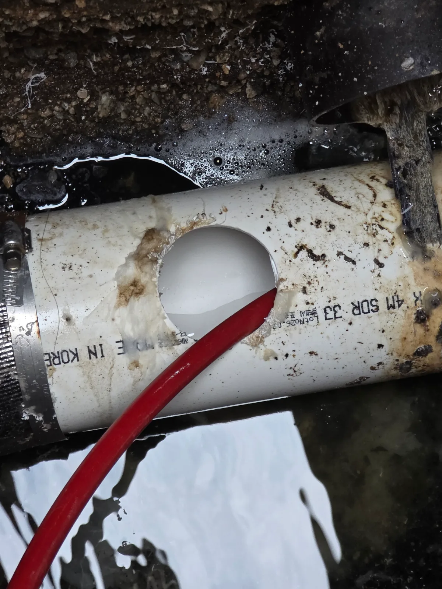

강동구 성내동 하수구막힘, 현장 도착 후 진단
강동구 성내동에서 변기 물이 내려가지 않는다는 요청을 받고 현장을 확인했습니다.
이곳은 처음 방문한 현장이 아니었습니다. 약 6개월 전에도 같은 오수관을 작업했던 곳으로, 당시에도 배관 구배가 거의 죽어 있어 휴지조차 쉽게 흘러가지 못할 수 있다고 안내드렸던 현장이었습니다.
그래서 이번에 다시 변기막힘 접수를 받았을 때 가장 먼저 “혹시 휴지나 다른 이물질을 넣으셨는지” 확인했고, 실제로 사용하셨다는 답을 들었습니다.
현장에서 변기 물이 정상적으로 내려가지 않는 상태를 확인한 뒤, 이번에도 변기 자체보다 아래쪽 오수관 쪽을 우선 점검했습니다.
겉으로 나타난 증상은 변기막힘이었지만 실제 작업이 필요한 곳은 정화조 출수관 방향으로 이어지는 오수배관이었습니다.
1단계: 증상 확인과 필요한 장비 작업
변기 쪽에서 막힘을 반복적으로 밀어내는 것보다 실제 막힘이 형성된 오수관 구간에 직접 접근하는 것이 필요하다고 판단했습니다.
정화조 출수관 쪽 오수배관을 확인한 뒤 배관 측면에 작업구를 타공했습니다. 이 작업구를 통해 배관 내부 상태를 직접 확인하고 샤프트 장비가 진입할 수 있는 경로를 확보했습니다.
이번 현장은 단순한 변기 내부 막힘이 아니라 오수관 자체의 흐름이 좋지 않은 상태였기 때문에, 변기에서만 작업해서는 재발 가능성이 높은 구조였습니다.

2단계: 원인 구간 처리와 정상 작동 확인
타공한 작업구를 통해 샤프트 장비를 오수관 내부로 투입했습니다.
샤프트를 진행시키면서 배관 내부에 정체돼 있던 휴지와 이물질을 풀어내고 제거했습니다. 작업 중 샤프트 헤드와 장비에 휴지와 오염물이 묻어 나오면서 실제로 배관 내부에 잔존물이 쌓여 있던 상태도 확인할 수 있었습니다.
막힌 구간을 충분히 정리한 뒤에는 오수가 다시 흐를 수 있도록 배관 내부를 정리하며 작업을 마무리했습니다.
이번 작업의 핵심은 변기 한 곳의 물길만 일시적으로 만드는 것이 아니라, 변기에서 정화조 방향으로 이어지는 오수관 막힘 구간에 직접 접근해 내부 이물질을 제거했다는 점입니다.

작업 결과와 재발 방지 안내
강동구 성내동 변기막힘 증상의 원인이었던 오수관 막힘은 배관 타공 후 샤프트 작업으로 다시 통수시켰습니다.
다만 이 현장은 막힌 이물질을 제거한다고 해서 배관의 구조적인 조건까지 바뀌는 곳은 아닙니다. 기존부터 배관 구배가 좋지 않아 오수와 휴지가 원활하게 빠져나가기 어려운 구조였습니다.
따라서 이 현장은 일반적인 오수배관보다 휴지 사용 자체를 최대한 피해야 하는 곳입니다. 약 6개월 전에도 같은 내용을 안내드렸던 만큼, 이번 작업 후에도 재발 방지를 위해 동일한 내용을 다시 설명드렸습니다.
변기 물이 반복적으로 내려가지 않는다면 변기 내부만 계속 뚫는 것이 답이 아닐 수 있습니다. 이번 성내동 사례처럼 오수관의 구배와 정화조 출수관까지 함께 확인해야 실제 막힘 구간을 찾을 수 있습니다.
최종 조치: 변기 쪽에서 반복 작업하는 방식이 아니라 실제 막힘이 형성된 오수관 구간에 직접 접근했습니다. 정화조 출수관 쪽 오수배관에 작업구를 타공한 뒤 샤프트 장비를 투입해 내부에 정체된 휴지와 이물질을 제거하고 오수 흐름을 다시 확보했습니다.
현장 방문 전 확인하는 비용과 작업 범위
신라건축설비는 현장 증상과 배관 구조를 확인한 뒤 필요한 작업과 예상 비용을 안내합니다. 단순 관통으로 해결되는지, 배관내시경·석션·고압세척 또는 추가 장비가 필요한지는 현장 상태에 따라 달라집니다. 출장비와 야간 작업비, 추가 장비 비용이 발생할 수 있는 경우 작업 전에 먼저 설명하고 동의를 받은 범위에서 진행합니다.
업체를 선택할 때 확인할 사항
무조건적인 ‘0원’ 표현보다 실제 작업 범위, 추가 비용 조건, 사용 장비와 사후 대응 기준을 확인하는 것이 중요합니다. 해결되지 않았을 때의 비용 기준과 작업 후 동일 증상 발생 시 점검 범위를 사전에 문의해두면 불필요한 분쟁을 줄일 수 있습니다.
강동구 하수구막힘 자주 묻는 질문
하수구막힘은 왜 반복되나요?
강동구 성내동 현장처럼 변기 물이 정상적으로 내려가지 않는 증상으로 접수됐습니다. 약 6개월 전에도 같은 현장에서 오수관 막힘 작업을 진행했던 곳이라 이전에 확인했던 배관 상태를 바탕으로 다시 점검했습니다. 증상은 원인이 현장마다 다를 수 있습니다. 배관 내부 기름 슬러지·생활 오염물·스케일이 충분히 제거되지 않았거나 오수관·공용배관 구간에 문제가 있으면 반복될 수 있습니다. 재발 시 막힌 위치와 배관 상태를 함께 확인합니다.
하수구가 역류하거나 물이 안 내려가면 하수구뚫는업체를 불러야 하나요?
바닥 배수구가 역류하거나 여러 배수구에서 동시에 물이 빠지지 않으면 단순 배수구 막힘보다 깊은 배관이나 공용배관 문제일 수 있습니다. 전문 장비로 원인 구간을 확인하는 것이 좋습니다.
여러 배수구가 동시에 막히면 공용배관이나 오수관 문제인가요?
동시에 여러 곳에서 배수 불량과 역류가 발생하면 메인배관·오수관·공용배관을 의심할 수 있지만 건물 구조마다 다릅니다. 배관내시경과 현장 진단으로 구간을 구분합니다.
하수구뚫는업체는 어떤 장비로 작업하나요?
현장에 따라 샤프트, 석션, 배관내시경, 고압세척 장비 등을 사용합니다. 단순 관통이 필요한지 배관 내부 세척까지 필요한지는 오염 상태와 막힘 원인에 따라 판단합니다.
하수구 고압세척은 언제 필요한가요?
기름 슬러지나 배관 내부 오염이 넓게 쌓여 반복 막힘이 생기는 경우 고압세척이 효과적일 수 있습니다. 모든 하수구막힘에 고압세척을 적용하는 것은 아니며 먼저 배관 상태를 확인합니다.
하수구막힘 비용은 어떻게 정해지나요?
막힌 위치, 배관 길이와 구경, 공용배관 여부, 내시경·샤프트·고압세척 등 장비 투입 범위에 따라 달라집니다. 추가 작업이 필요한 경우 진행 전에 범위와 비용을 안내합니다.
하수구막힘 서울·경기 출동지역
신라건축설비는 강동구 성내동 현장을 포함해 서울 25개 구와 경기도 31개 시·군의 배관 문제를 상담합니다. 현장 거리와 기사 배정 상황에 따라 출동 가능 여부를 먼저 안내드립니다.
서울 전 지역
강남구 · 강동구 · 강북구 · 강서구 · 관악구 · 광진구 · 구로구 · 금천구 · 노원구 · 도봉구 · 동대문구 · 동작구 · 마포구 · 서대문구 · 서초구 · 성동구 · 성북구 · 송파구 · 양천구 · 영등포구 · 용산구 · 은평구 · 종로구 · 중구 · 중랑구
경기도 주요 출동지역
수원시 · 용인시 · 고양시 · 화성시 · 성남시 · 부천시 · 남양주시 · 안산시 · 평택시 · 안양시 · 시흥시 · 파주시 · 김포시 · 의정부시 · 광주시 · 하남시 · 광명시 · 군포시 · 양주시 · 오산시 · 이천시 · 안성시 · 구리시 · 의왕시 · 포천시 · 양평군 · 여주시 · 동두천시 · 과천시 · 가평군 · 연천군